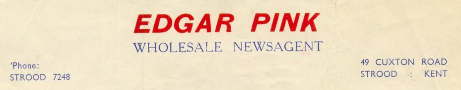
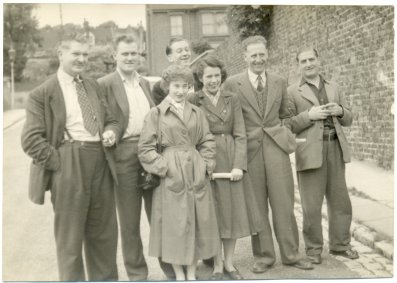
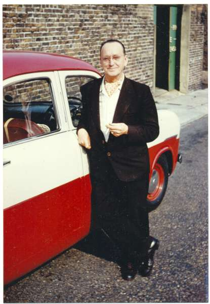
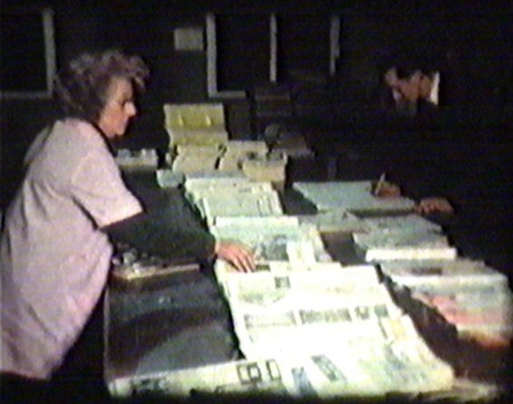
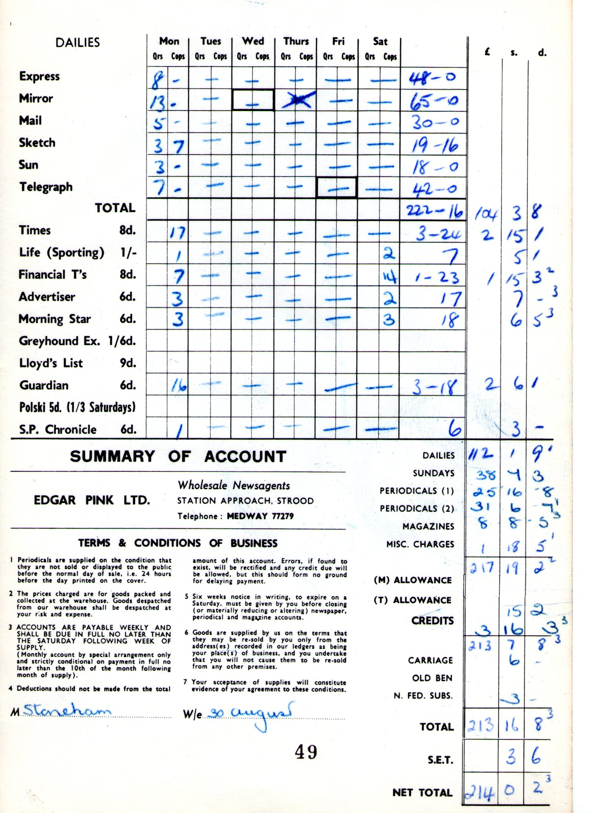
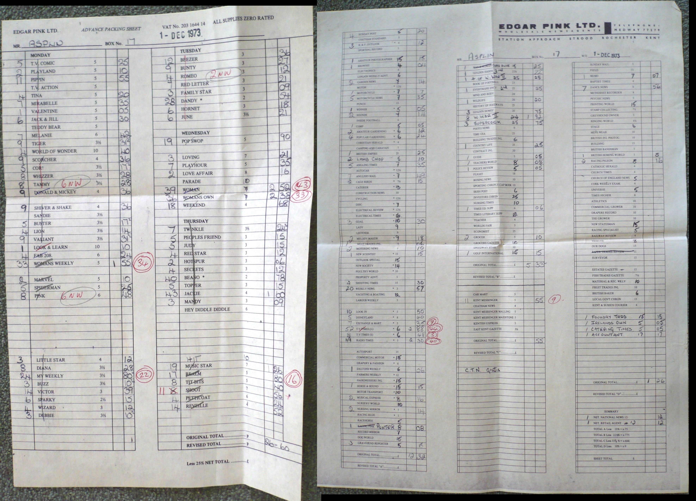
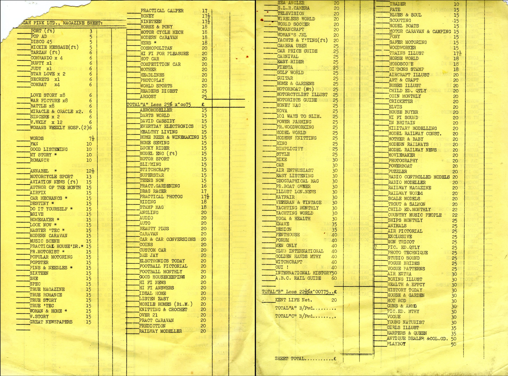
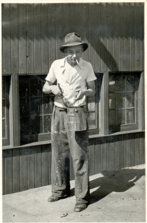
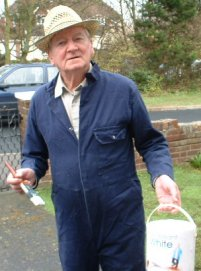

Edgar Pink - Business
1950 - 1960

Well, to start with, there was my Dad, the chap at the beginning of the story. He had spent the most part of his working life in Fleet Street working at first for the London Evening Standard and latterly for the Sunday Pictorial. In 1950 he resigned his position and was appointed distributor of newspapers and magazines for the area of Strood and Rochester. This was in April and I was still at school waiting to sit the school certificate examinations.
Mrs Pierson had run the business throughout the war after her husband's death, and the business was somewhat depleted, the neighbouring Surridge Dawson's supplying magazines to a large proportion of the customers. In those days business was conducted in pubs, golf courses, coffee houses etc., and when an agreement was made, then your word was your bond, so to speak. By personal visits and reaching agreements Dad managed to regain the majority of the 'lost' business.
| 1950 -1960 | |
|---|---|
|  |
This is down the side street - Roach Street off
Cuxton Road Strood where we had our home/warehouse/offices
combined, from 1951 until 1961 When the new Depot at the Station
was built. The Staff Pictured are L to R Les Smaile, Jim Fullagar, Me behind Mavis, Maureen Cocup, Sam Brown and Jim Worden. |
| c 1955 | |
|---|---|
|  |
This is down the side street - Roach Street off
Cuxton Road Strood where we had our home/warehouse/offices
combined, from 1951 until 1961 When the new Depot at the Station
was built. Dad, the proud owner of a Ford Zephyr which had been resprayed red/stone. This replaced the ever popular Ford Prefect's he used to run. He had a new one each year for about £120 and received back £100 part exchange for the old one! That was from Peacock's of Balham where he was well in with the manager! As far back as before the war I was allowed to ride in the car up on the lift while the mechanic inspected the underneath and Dad and the manager went to the pub. |
|
 We
operated a similar accounting system for out customers, but on a
smaller scale. Initially our weekly sheet had the main titles printed
on the front ordered by the 'day of sale', and 'monthlies' on the
back of the sheet. We had a 'goods inwards book' and if any monthlies
were received, the sheet pricers, of which Mavis (my wife) was one,
would check the goods inwards for 'monthlies'. If any were entered in
but not charged, take the 'monthlies' order book and copy from that
the quantities for each customer onto the back of his account sheet,
and at the same time extend the price. Most publications had their
own pricing structure and there were dozens of pricing tables propped
up for the pricers to use. The quantities for weekly publications
were a standing order, and details for each customers order would be
copied over from one week to another, and then checked over between
two people, one calling to the other to check the accuracy of the
copying! Some publications arrived nearly a week in advance so those sheets were needed to advance pack those publications. We usually had three sets of sheets on the go at any one time. When the publications arrived in the warehouse, the label was cut from the parcel and spiked on a large metal spike. The detail was entered in the 'Goods In' book, and usually several publications were handled at one time in what was called 'a lay-up' A caller called the quantities to the packer who 'picked' the magazines, and marked a line through the item on the list indicating it had been packed. -When a block of packing had been completed, e.g. Mon/Tue/Wed blocks, the smaller earlier part of the week, the sheet pricer(s) would come and grab any sheets that were not being used to start the job of extending the values in the columns. Sometimes the packers would have the front part of the sheets and be packing for boxes 1 - 30, while the sheet pricers had sheets from 30 to the end. (We had about 60 boxes in those days). Then, when the packers were ready the sheets were swapped round. Of course, until the Saturday items, like the Grocer, Grocer's Gazette, Estates Gazette etc had been handled, the pricing could not begin, and the accounts would not be ready to be sent out until maybe the following Thursday |
| Daily Accounts and Summary | Dailies Invoice | |
|---|---|---|
|  | Whilst clearing my garage the other day I came across a folder with some relics of the pre-computer age of accounting for the sale of newspapers and magazines to the retail trade which illustrate all the complexities which faced the school leavers in the pre-decimal age - baker's dozens or quires, accounting to the nearest farthing after the farthing had been withdrawn, and so on. Below I will show you some examples of our account sheets used in those days. - Oh! the memories! |
| Weekly Packing Sheets | Photo Copied | |
|---|---|---|
|  |
These sheets were implemented after visiting Bert and Barbara Petty
from Reading. (He had a Volvo P1800 with an index plate "AEP 1" -
Jealous!) He, like me lamented the repetitive weekly calculations, many customers never altering their order from one week to the next. He had devised the use of a photo copier whereby you only needed to alter the pricing relating to the items which had changed, and of course the total. To be sure of the systems accuracy a quarter of the sheets were totally checked each week. |
| Monthly Account Sheets | Notice the cheap prices | |
|---|---|---|
|  |
These sheets were printed off on a Gestetner machine (Sold to us by
Jim Spackman). Each time a monthly magazine arrived for packing, a
loose 6 x 4 index card was taken from the 'monthly tray' and the
details entered on the back. i.e. date of packing, issue date,
price and who packed it. Then after the magazine had been put in the customer pigeon holes (boxes) the card was dropped into the 'to be charged' box. When ever a slack 10 minutes arrived in the pricing dept., someone would come and see if there were any magazines to be charged and if so, the quantities on the card(s) would be added to the customer's sheets (these) and the card returned to the monthly tray in the metal filing cabinet. |
|


Whilst it was normal to have nothing much to do on a Monday, hence
the washing of vehicles above, shortly after moving to 49 Cuxton Road
there befell us a newspaper strike, and then later a magazine
publishing strike. - It was catastrophic. Rather than stand us all
off, dad had us paint the warehouse in and out. Here you can see me brush in hand as taught by Jack Wanstall, a painter and decorator who lived at 37 Smith Street. His wife, Rachel was my Mum's 'daily help'. What a wonderful person she was. _ Here I am fifty years later and still painting!! At this time, the popular newspapers sold at 1d. each. The trade price was 1/2d. a quire (26 copies) 1/2d. being 14 old pennies, or nearly 6p in todays currency - I remember this equated to a discount of 30.42%. We used to pay Fleet Street publishers 10d. a quire. All Newspapers were delivered "carriage paid home", whereas magazines were not necessarily. Most magazines were sold in quires of 26 and were priced by the dozen - 13/12 less 25%. - 13/12 meant that you received 25% discount from every copy up to 12, the the thirteenth one was given free. I still think that was a very good way of discounting for quantity. The bigger customers automatically receiving a graduated preferential discount. This method of charging out was laid down by the publishers in those days before the Monopolies Commision came into being in 1964. (How do I remember all this crap?) - as a 'frinstance' When I finished wholesaling in 1979, I remained in retail business at GORDON JAY LTD, the first thing I did was to put all the orders that came close to 13 copies, or multiples thereof, into multiples of 13! Our order for Radio Times was around 143 which gave 11 copies free! - It made quite a difference to the profit line. - Now the discount is around 25% at best, and no free copies! |